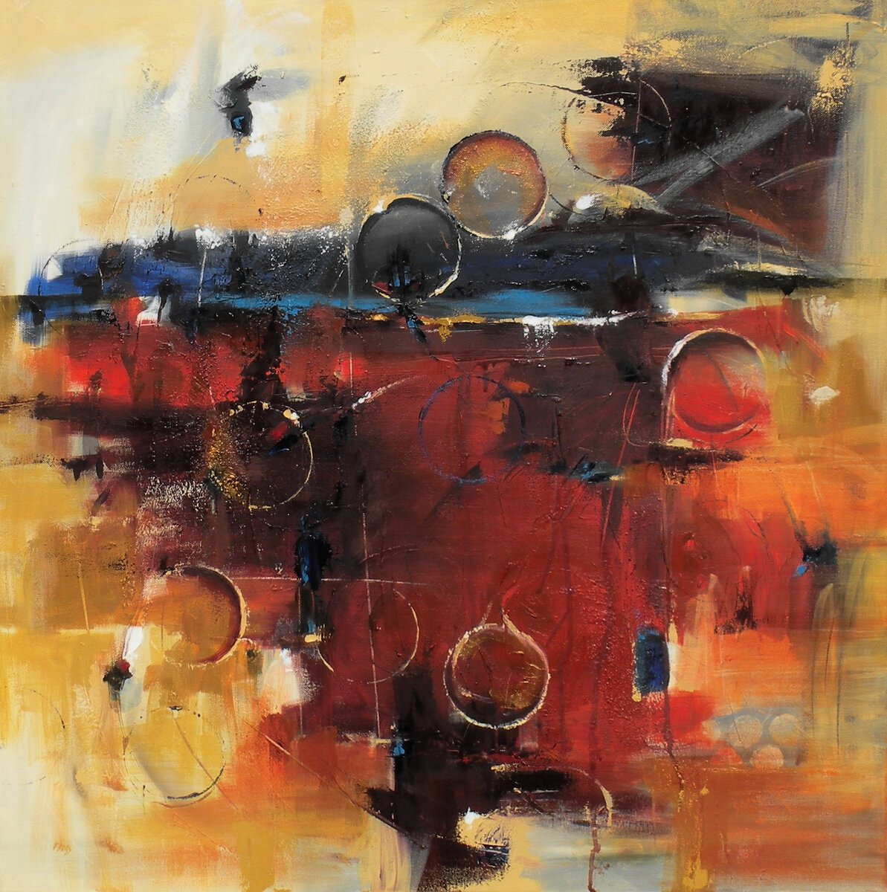

Они вместе отправились сквозь таинственный мрак, наводненный звуками города, доносившимися с подошвы горы, обвеянные дыханием прохладного ветра, проносившегося с увенчанной деодорами вершины Джико, который, казалось, подпирал звезды. Огоньки в домах, разбросанных повсюду, образовывали как бы другой небесный свод. Некоторые были неподвижны, другие красовались на экипажах беспечно болтавших англичан, отправлявшихся на обед.